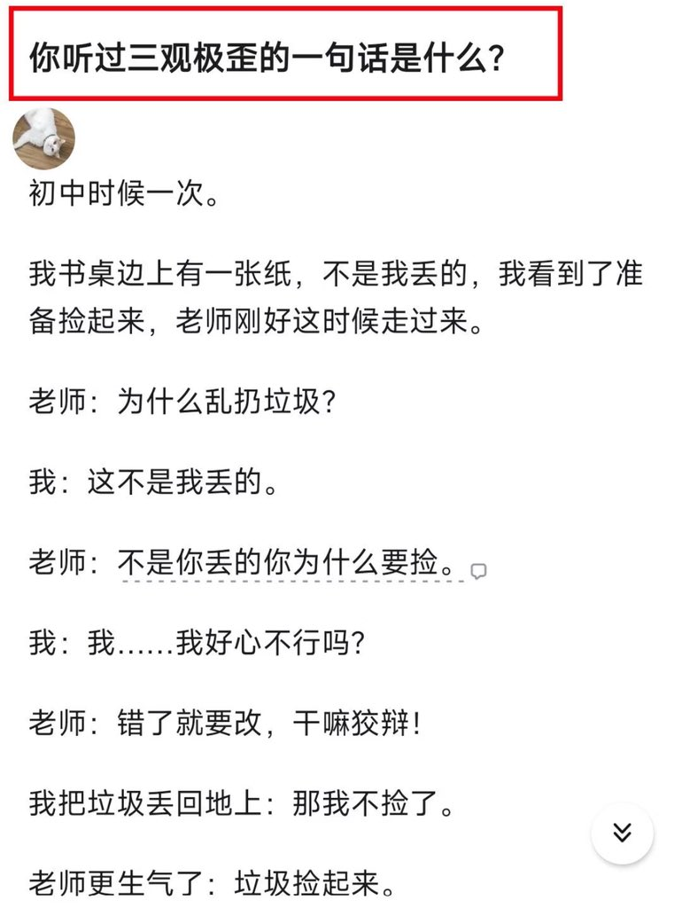
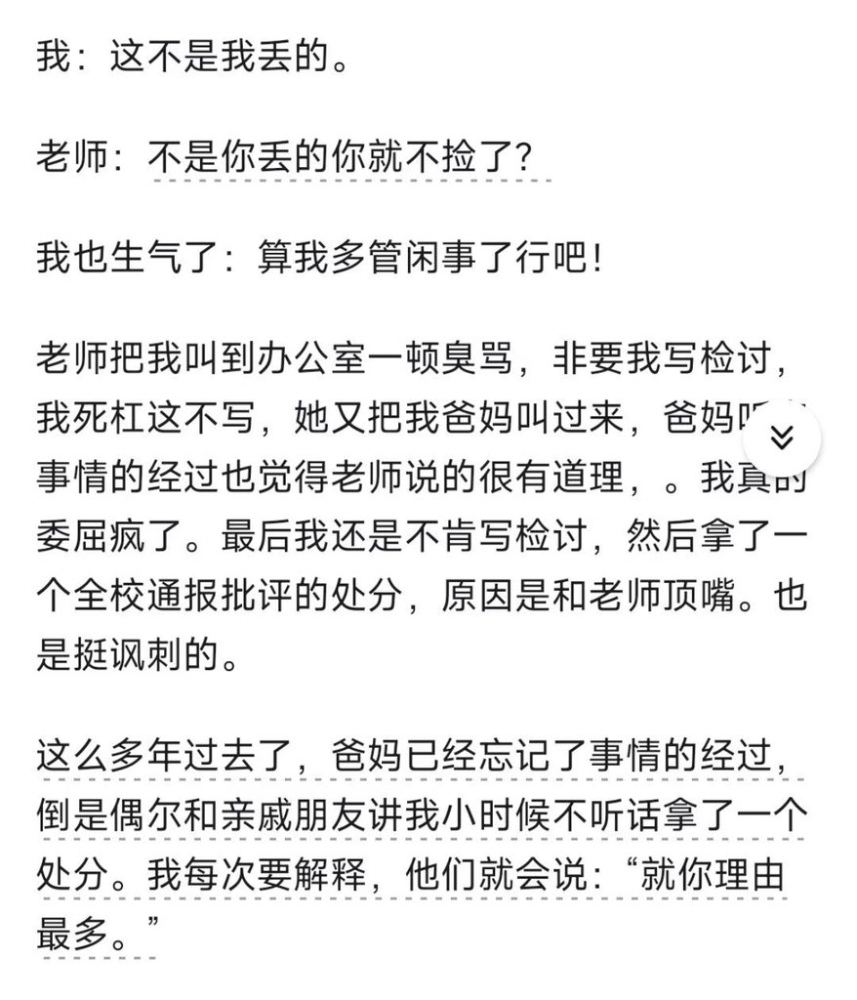
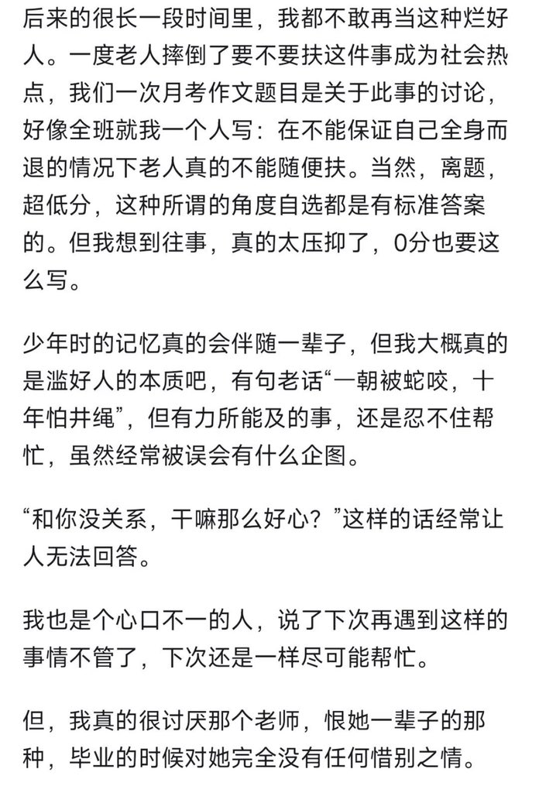

一直以来，我非常讨厌“优胜劣汰，适者生存”，“那些悲惨的人原本就应该是被社会淘汰的人，他们原本就应该死去”，“放下助人情结，尊重他人命运”的说法。
根本原因是，自然法则下的“优胜劣汰”，讲究的是“物竞天择，适者生存”，如果按照这套逻辑，人类社会的“优胜劣汰”，也理应当是纯粹是每个人优秀的品质，行动能力，执行力，个人素质等各方面的竞争和筛选。
但是现实往往不是这样的，很多过得很好，获得了最大资源的那一群人，往往并非是“最有能力的那一群人”，而是“最自私，最没有道德下限，最损人利己的那一群人”。
现实中和人类社会中所谓的优胜劣汰，最终的结局往往是最善良，道德品质越高，最有原则的人吃亏甚至死亡。最自私，最没有道德下限，最损人利己的那一群人笑到最后，获得所有，赢得一切。
十年来，我在跨性别社群遇见过的很多很多的助人者，原本可以过好自己的生活，却失去了很多。原本可以尽管过得不是很好，但是至少可以活下去的人，最终死去。

根本原因是，自然法则下的“优胜劣汰”，讲究的是“物竞天择，适者生存”，如果按照这套逻辑，人类社会的“优胜劣汰”，也理应当是纯粹是每个人优秀的品质，行动能力，执行力，个人素质等各方面的竞争和筛选。
但是现实往往不是这样的，很多过得很好，获得了最大资源的那一群人，往往并非是“最有能力的那一群人”，而是“最自私，最没有道德下限，最损人利己的那一群人”。
现实中和人类社会中所谓的优胜劣汰，最终的结局往往是最善良，道德品质越高，最有原则的人吃亏甚至死亡。最自私，最没有道德下限，最损人利己的那一群人笑到最后，获得所有，赢得一切。
十年来，我在跨性别社群遇见过的很多很多的助人者，原本可以过好自己的生活，却失去了很多。原本可以尽管过得不是很好，但是至少可以活下去的人，最终死去。



从我多年来接触的无数人的经验来说，一个人是否善良，和一个人的阶层（这里的阶层包含一个的家庭背景，经济条件，和个人天赋)并没有统计学上的关联性。无论是上层和底层，都有很善良和很卑贱的人。 https://t.co/hkEyRCw1T7